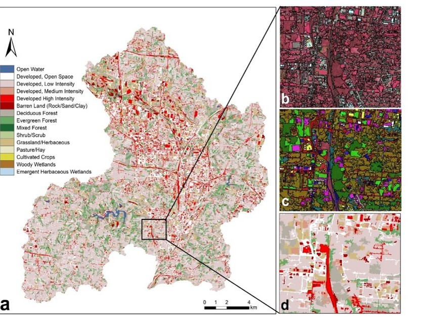

2 minutes read
The paper titled "Sharpening Land Use Maps and Predicting Land Use Change Trends Using High-Resolution Airborne Images: A Geostatistical Approach" addresses the critical need for detailed and regularly updated land use/land cover (LULC) data, essential for comprehensive Earth surface characterization, predicting land use changes, and evaluating development plans' impacts.
The study introduces a novel spatio-temporal Cokriging method aimed at enhancing LULC data derived from both high-resolution airborne imagery and historical remote sensing data, such as Landsat. While airborne images offer superior spatial resolution, they lack consistent temporal coverage. Conversely, historical satellite imagery like Landsat provides temporal coverage but at lower spatial resolutions.

Demonstrating the method's utility using time-series coarse resolution LULC maps and high-resolution airborne images of the Upper Mill Creek Watershed, the approach leverages spatio-temporal dependence within and between datasets. By modeling the Anderson classification codes using spatial, temporal, and cross-covariance structures, and transforming integer classification codes to class probability, the method effectively reconciles differences among multi-source spatio-temporal LULC data.
The outcomes of this approach include the generation of detailed, sharpened LULC maps with enhanced land features, facilitating the characterization of spatial and temporal changes in LULC. Additionally, the method uncovers trends in land use changes, providing a high-quality dataset invaluable for monitoring, assessing, and modeling future LULC changes.
In summary, the paper introduces an innovative geostatistical approach that addresses the limitations of varying spatial and temporal resolutions in LULC data, resulting in refined maps, improved understanding of land use changes, and creating a robust dataset essential for effective land management and planning.
Updated: June 01, 2019